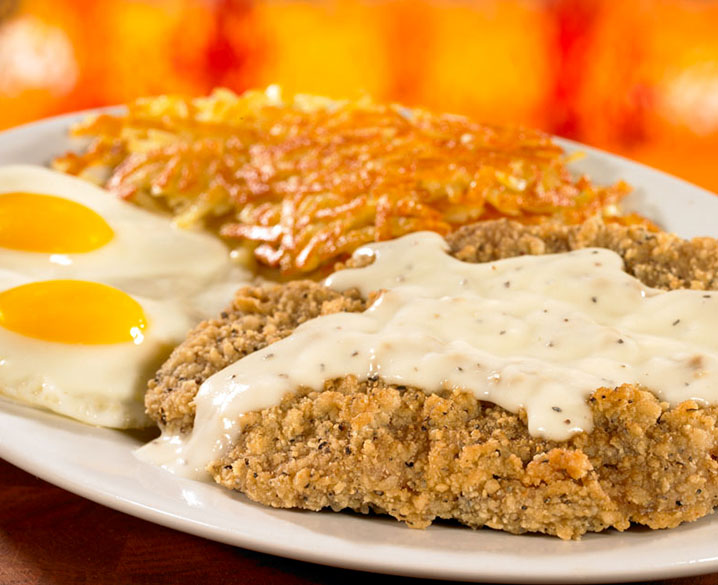

Chicken Fried Steak Breakfast

Description
Chicken fried steak is a fantastic dish, and my favorite way to sserve it is with breakfast. Served alongside eggs, hashbrowns, and sausage and covered in country style gravy.
it's a great source of protein and a hearty home-cooked meal.
Ingredients
- 1 cup flour all purpose
- 1 1/2 teaspoon baking powder
- 1/4 salt, table variety
- 1 tablespoon shortening or oil, or softened butter
- 1/2 cup flour all purpose
- 1/2 teaspoon salt freshly ground black pepper to taste
- 1 large egg
- 2 tablespoons water
- 2 bottom or top round steaks pound to tenderize
- 1/3 cup vegetable oil
- 2 1/2 tablespoons flour, all purpose
- 1/4 teaspoon salt table variety
- 1/8 teaspoon freshly ground black pepper
- 1 1/2 cup milk, whole fat
Steps
- Mix dry ingredients together in a bowl.
- Using your hands, or a pastry blender, cut the shortening, or the oil, or softened butter into the dry ingredients, until the mixture resembles a coarse meal.
- Reserve for later use.
- Chef’s Note: If you make more of this than you need, simply place it in the refrigerator in a tightly sealed container. It should last for several months.
- Chef’s Note: When you tenderize a steak, you are essentially pounding it with a dimpled mallet, which is an excellent way to take out your frustrations. But something else besides tenderizing is happening. You’re pounding what’s on the surface of the steak into the interior of the steak. If there are any nasty bacteria on the outside, they are now on the inside.
Two things: First, make sure that you’re working with fresh steaks, and second, make sure you cook them thoroughly, minimum internal temperature should be 160f (71c). No rare or medium rare when it comes to tenderized steaks, or any ground meat products.
- Add the flour, salt, and pepper to a shallow pan and thoroughly combine.
- Whisk the egg and water together, and add to a second shallow pan.
- In a third pan add the coating mix, which you previously made.
- Start with the flour, and coat the steaks.
- Next dip into the egg mixture.
- Finally, coat the steaks generously with the coating mix.
- Allow the steaks to rest on a parchment-lined baking sheet for 20 minutes.
- Chef’s Note: The resting period will help to set the crust.
- Chef’s Tip: While the steaks are resting, you might want to drop down a bit in the recipe, and make the milk gravy. Then, keep it warm on a side burner, and cook the steaks. And speaking of steaks, let’s get to it… I’m hungry.
- Add the oil into a large frying pan (I prefer cast iron), over medium-high heat.
- When it begins to shimmer, add the two steaks, and fry 4 to 5 minutes per side, or until they are nice and golden brown.
- Remove the steaks from the pan, and drain on paper towels.
- THE MILK GRAVY
- Remove all but three tablespoons of the oil from the pan that you used to cook the steaks, and place over a burner at medium heat.
- Add the flour to the pan, and mix until it absorbs all the oil (you’re making a roux).
- Add the salt and black pepper, and combine.
- Add the milk to the roux, and whisk until thoroughly combined, and thickens.
- Chef’s Tip: To prevent lumps in the gravy, after adding the flour to the oil, slowly add the milk a little at a time and mix with the whisk, and then add more milk and whisk until all the milk has been added, and you have the desired consistency.
Check for proper seasoning, and you’ve got it.
- Serving Suggestion: Fry up two nice over-easy eggs, lay the steak next to the eggs, with some hash browns and cover in the milk gravy… don't forget a couple of nice skillet baked buttermilk biscuits.
Homepage